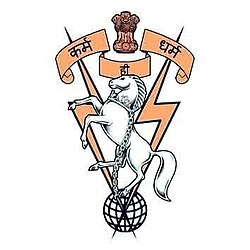

Submitted By:
1. IKRA
2. AYUSHI SINGH
3. SANIYA
Submitted To:
COL G.S. PHANI RAJ (WSG)
Guided By:
Mithlesh Sir
We have taken efforts in this project. However, it would not have been possible without the kind support and help of many individuals. We would like to extend our sincere thanks to all of them.
We are highly indebted to COL Phani Raj (OIC, WSG) and our guide Mithlesh Sir for their guidance and constant supervision as well as for providing necessary information regarding the project and also for their support in completing the project.
Our thanks and appreciations also go to our colleagues in developing the project and people who have willingly helped us with their abilities.
We extend our grateful thanks to 510 Army Base Workshop, Meerut Cantt for the support and cooperation.
Project Computer Science
Eight Army Base Workshop (ABWs) were established during the Second World War to carry out repairs and overhaul of Weapons, Vehicles and Equipment to keep The Indian Army operationally ready, towards these End, they also Undertake Manufacture of Spares. 510 Army Base Workshop located at Meerut overhauls air defense and guided missiles systems.
Tatra all-terrain vehicles and Armored Dozers are heavily utilized combat engineering assets. Tracking their maintenance, RUL (Remaining Useful Life), and asset history is critical for operational readiness.
To transition from manual tracking to an enterprise-grade framework, a fully decoupled MERN-stack-inspired pipeline (React + Node + Drizzle ORM + SQLite) was deployed.
The database layer standardizes local data storage, handling schema definitions for Users, Vehicles, Assets, Inventory, Procurement, and Maintenance Jobs.
This section outlines the menus and functionalities created in the Smart workshop Asset & maintainance Management System. This guide allows future developers to understand the project structure and recreate or expand it effortlessly.
The system is secured by JWT-based login mechanisms. User authorization is managed through Role-Based Access Control (RBAC). The supported roles are Admin, Workshop Commander, Supervisor, Technician, Store Keeper, and Viewer. Menus are dynamically rendered based on the logged-in user's role.
The centralized monitoring hub. It fetches aggregated data from the backend to display visual KPIs (Total Assets, Pending Repairs, Low Stock Items) and incorporates dynamic Recharts graphs to track departmental efficiency.
A full CRUD (Create, Read, Update, Delete) registry table mapping to the `vehicles` and `assets` database tables. Users can filter by Department, view vehicle statuses, and export the registry to PDF or Excel formats.
A drag-and-drop HTML5 Kanban Board that visualizes the Engine Repair Group's progress. Technicians move maintenance jobs across columns: Pending -> In Progress -> QA -> Completed, which automatically triggers API updates to the SQLite database.
Inventory: Real-time tracking of spare parts (Filters, Tires, Lubricants). Features a conditional rendering system that automatically flags items as "Low Stock" when quantities drop below predefined thresholds.
Procurement: Interfaces directly with Inventory, allowing Store Keepers to quickly generate Purchase Orders (POs) for depleted parts.
Lists all scheduled and historical maintenance tasks. Provides detailed views into specific vehicle repairs, associated costs, and assigned technicians.
Comprehensive tabular reports aggregating data from Maintenance, Procurement, and Inventory. Analytics visually represents this data through trend lines and area charts, identifying recurring issues in specific assets.
A natural language interface integration via `aiService.js`. Instead of using SQL, commanders can type "Show me pending tasks for Tatra trucks" and receive a database-driven response instantly.
The Employees module allows Admins to add new personnel, assign their departments, and define system roles. Settings manages global preferences, including toggling the "Army Palette" UI theme.
To deploy the system:
npm run seed in the backend.npm run dev on port 5000.http://localhost:5173.Future expansions involve deploying Raspberry Pi edge clusters directly onto workshop engine testbeds to extract real-time MQTT acoustic emission data, feeding live IoT data directly into the Assets registry.
By migrating from traditional paper-based maintenance to a data-driven Predictive Maintenance paradigm, the 510 Army Base Workshop can minimize unscheduled breakdown downtime. The MERN-stack blueprint provides a robust foundation for scaling military logistics.